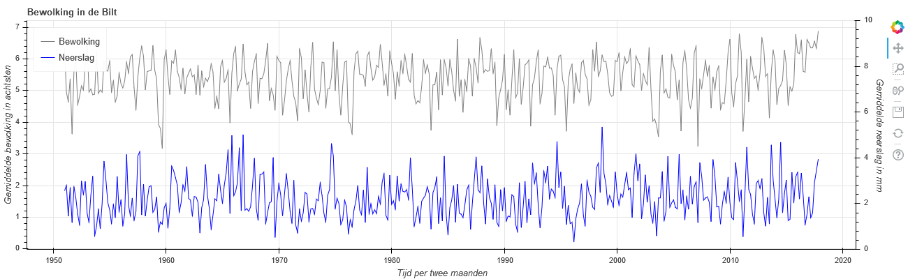

{% seo %}
Skip to the content.
{{ site.title | default: site.github.repository_name }}
{{ site.description | default: site.github.project_tagline }}
{% if site.github.is_project_page %}
View on GitHub
Display Graphs
Display Tables
{% endif %} {% if site.show_downloads %}
Download .zip
Download .tar.gz
{% endif %}
{{ content }} 
{% if site.google_analytics %} {% endif %}


 {% if site.google_analytics %}
{% endif %}
{% if site.google_analytics %}
{% endif %}